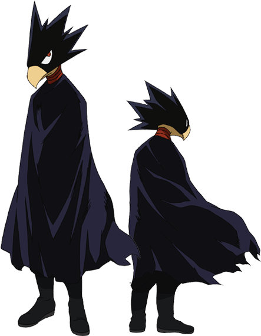

Fumikage Tokoyami
Nome de Herói: Tsukuyomi
Individualidade: Dark Shadow – Controla uma entidade sombria consciente conectada ao seu corpo. Fica absurdamente poderosa no escuro, mas difícil de controlar, e enfraquece na luz.
Perfil:
Tem uma vibe mais sombria, reservada e poética. É focado, sério e um dos combatentes mais fortes e táticos da turma.